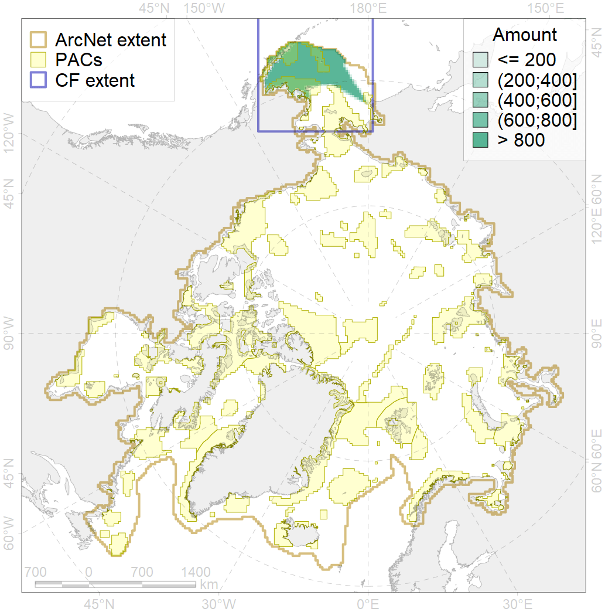
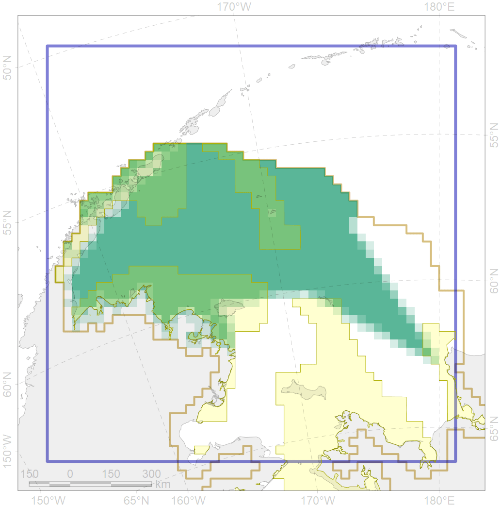

4084

| CF code | 4084 |
| CF name | Fish zoogeography, Pacific Region, high-boreal and low-boreal districts of the Eastern North-Pacific subregion |
| Time Period | 2019 |
| Source(s) | Chernova, produced for this project |
| Seasonality | Jan-Dec |
| Depth Horizon | |
| Methodology | expert opinion based on summarised data of trawl surveys and multiple publications |
| Use Restrictions | unknown |
| Author Name | N. Chernova |
| Notes | |
| Scenario’s Target | 0.08155731 |
| Target Achievement | 0.354 (Scenario: 433.5%) |
| PAC | Share of the Total Amount within the PAC | Share of the Target Achievement for the ArcNet | PAC’s Contribution to the Target Achievement |
|---|---|---|---|
| 1 | 10.1% | 118.1% | 27.3% |
| 2 | 8.1%9.8% | 81.5%86.1% | 18.8%19.9% |
| 3 | 14.5%15.6% | 166.7%179.4% | 38.4%41.4% |
| 4 | 0.3%0.3% | 2.7%2.7% | 0.6%0.6% |
| 5 | 0.3% | 3.6% | 0.8% |
| inner | 33.2%36.0% | 372.6%389.9% | 86.0%89.9% |
| outer | 66.8%74.8% | 60.8%144.1% | 14.0%33.2% |
| † supplement values are for area consistence whereas principal values are for Accenter compatible gridded stats |